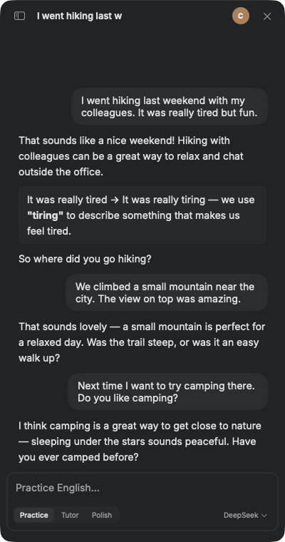
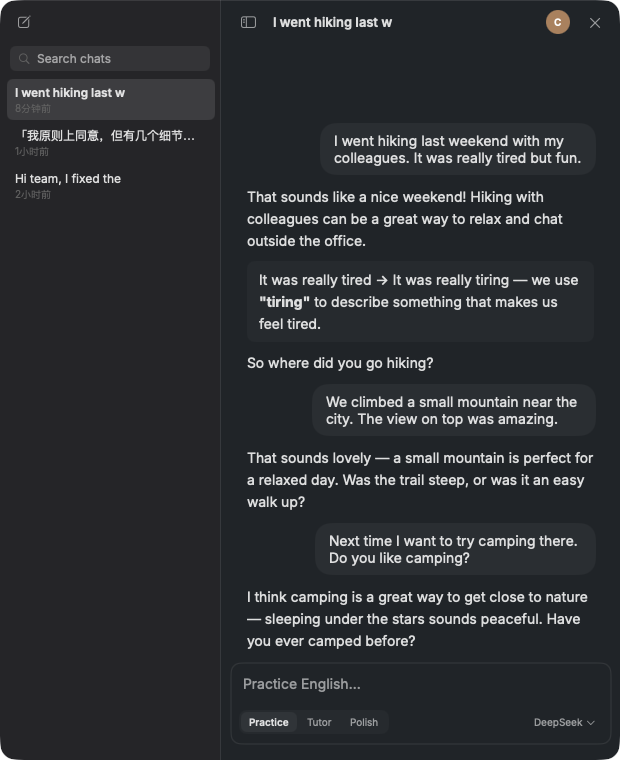

从站会卡壳,到第二天一次打对。全程由这台 Mac 上的真实管线渲染。
它刻意不做词典、不做课程、不做打卡。只做一件事:让「想问一下英语」这件事的成本低到忽略不计。
左键图标即开对话窗,浮在最上层。读到生词、写到一半的句子,切过去问完就走,不打断心流。
近期轮次原样带上,更早的历史自动摘要。长对话不断片,前面教过的表达后面会点名复用。
在对话里划选任何词句,结合前后文给出「这个词在这句话里」的讲解,而不是词典释义罗列。
直接用 macOS 系统 TTS 朗读单词和句子,可调音色语速。不下载语音包,不装运行时。
取词讲解一键收藏,连同语境句子一起沉淀。支持搜索、朗读、复制和 JSON 导出。
对话、生词、配置全是可读可备份的纯文本 JSON。没有账号体系,没有云端同步,没有黑箱。
同一张脸,两种教法。窗口底部一键切换;贴上英文不发问,自动当润色处理。

先自然聊起来,再顺手纠一处最重要的错。纠正用简单英文解释,不以打断表达为代价。
知识问题给结构化中文讲解配地道例句;错句直接当教学现场,三段式批改讲清为什么;贴英文润色,改动逐条说明。

侧栏里是带标题的会话列表,可搜索、可回看,左缘刻度轨一瞥定位到任何一轮。
聊到的好表达随手收藏进生词本,讲解和出处句子一起存。
唯一离开这台 Mac 的数据,是发给你自己配置的 LLM 供应商的请求内容。
v0.1.0 公开预览版。尚未公证:首次打开会被 Gatekeeper 拦一次——系统设置 → 隐私与安全性 →「仍要打开」即可,之后版本自动更新,不用再回这里。
8.7 MB · 随包字体与图标 · 首次启动需填入你自己的 API Key
# 开发者通道:克隆后构建并运行 $ make app ✅ build/Parrotlet.app 已就绪 $ open build/Parrotlet.app # 离线单元测试 / Swift 6 类型检查 $ make test $ make swift6-typecheck